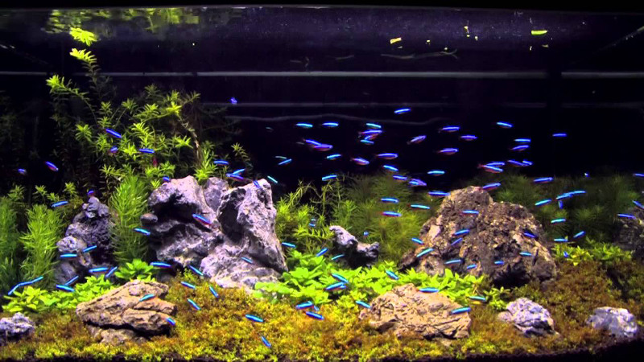

Deciding on what size aquarium to set up is one of the big questions every aquarist wrestles with.
While today’s tiny nano tanks are more technically advanced than ever, they’re still tiny.
For many of us, the reason we want an aquarium is to recreate a part of nature in our own home or office.
The coolest part of having an aquarium is being able to watch and care for our own tropical reef, Amazonian
river, Asian pond or African lake. Keeping a couple of small fish is certainly fun. Sometimes the only way
to have an aquarium is to go small. But we’re here to say, if you can, Go Big! Want to know why big
aquariums are better?
Here’s a list of ten important reasons why large aquariums are better than small tanks.
1 - EASIER TO CARE FOR
People often say aquariums are hard to care for.
It seems logical to assume that if a ten gallon tank is hard, a big aquarium would be even harder
to keep looking great. But this just isn’t true.
The reason most people think taking care of an aquarium is hard is because they never learned how
to do it.
Another reason is there’s a lot of misinformation floating around on the web and even in pet shops.
The truth is, larger aquariums are easier to take care of.
You may need to spend a little more time now and then with maintenance, but in the long run larger aquariums are much easier to keep than smaller tanks. Keep reading to learn why.
2 - LESS FISH PER GALLON
You’re probably thinking “No way! More gallons equals more fish.”
To understand what this means, we’ll need to look at smaller fish tanks.
The main cause of water quality problems and sick fish is over crowding.
Since the aquarium is small, we want to pack it with livestock. There are so many beautiful fish,
the temptation to add “just one more fish” is very strong. The tank may look great at first, but
eventually the heavy bio load causes an ecological disaster. That’s because there are too many fish
per gallon of water. What you can’t see, unless you test the water, is a rise in ammonia, nitrite
and nitrate due to the heavy fish load.
Dissolved organics and accumulating solid fish waste also swing the water quality toward the
danger zone.
These conditions are linked to fish disease problems like parasitic worms, bacterial infections and
reduced immune system response.
The poor water quality favors disease organisms over fish health.
There’s also the stress factor due to over crowding. Too many fish packed into an aquarium of any
size will cause ongoing stress to the tank’s inhabitants.
This stress inhibits the immune system, causing an inability for the fish to thrive. They won’t
instantly die may not even get sick. They’ll just live a short, unhappy life.
Larger aquariums allow you to have a nice community of fish without having to overstock the tank.
You’ll have more fish in the aquarium but less fish per gallon compared to a sickly 10 gallon aquarium
packed with weak fish that continually die.
3 - LESS COMPATIBILITY PROBLEMS
If you entered the hobby with a ten or twenty gallon aquarium, you’ve experienced the frustration of
a bully fish.
That one fish that keeps chasing all the others ruins the fish keeping experience. Chances are,
the bully is considered a friendly community fish.
So why does it fight so much? Tropical and saltwater fish need their own space. Nowhere in nature
will they be forced to continuously live inches away from other fish. The constant face to face
contact and lack of territory to call their own leads to mental stress and the “fight response.”
No one knows why some fish, even of the same species, seem to snap in over crowded conditions.
Larger aquariums give fish room to live. They’re able to swim around, hang out in an area they
like and not have to feel pressured by other fish.
They’re be less nipping and shredded fins too.
4 - MORE AQUARIUM SHAPES AND SIZES
Today’s aquarium manufacturers are building aquariums in an array of shapes and configurations
like never before.
In the 80’s almost all glass aquariums were assembled in the traditional rectangular shape.
Today you can choose from an almost limitless selection of rimless, bent glass and even
square aquariums.
Matching aquarium stands are available in a variety of traditional and modern finishes, making it easy to choose an aquarium that blends well with your home or office décor.
5 - BETTER VIEWING
While we think nano aquariums are cool, nothing beats the widescreen effect of a large aquarium.
You can sit back in a comfortable chair and watch your reef or freshwater aquarium from across the room.
With modern wireless LED light fixtures, you’ll be able to create a variety of looks ranging from natural
daylight to moonlit nights. Some light fixtures even come pre programmed with storm mode and lightning
flashes.
Of course, you can get close to the tank to see all the actions, but you’ll have even more to see with
a large aquarium!
6 - CREATE MORE INTERESTING LANDSCAPES
With a wider, taller and deeper aquarium, you’ll be able to create aquascapes impossible to achieve in
small tanks.
You can create a really interesting reef with a large tank. Instead of piling rock against the back
wall, build a simple mound of rock in the center of a cube-shaped aquarium.
All the extra space around the reef is not wasted. It creates a three dimensional jewel loaded with
corals.
The same goes for live plants. Drift wood looks great in a taller tank.
The big sword plants will have room to grow and show off their leaves when they’ve got room to
spread out.
7 - MORE NATURAL FISH BEHAVIOR
When freshwater or saltwater fish are “packed” into a small aquarium, they’re always on the defensive.
Their instincts tell them something is wrong when they’re forced into an over populated space.
Since the fish are always on edge, they can’t relax and show their unique traits and personality.
Give them a larger tank and you’ll soon notice the interesting behavior that each species brings to
the aquarium.
More room allows you to create a diverse aquascape, which provides the fish with a variety of niches
to inhabit. They figure out which section of the tank suites them and stake out their territory.
8 - BEST AQUARIUM FOR LARGE FISH SPECIES
If you’re a fan of big fish, a large aquarium is a must! But you don’t have to start with big fish to
get big fish.
There are a variety of juvenile “big fish” species available from aquarium shops and online sellers.
They’re much smaller than adults but will eventually grow quite large.
Since they’ll live a long time, why not start them out in a big aquarium and watch them grow over
the years?
Large species need room to exercise and explore. It is unfair to force them to float motionless
in a “too-small” aquarium. There’s also the issue of waste products. Big fish eat more and produce
more ammonia and solid waste. The dilution factor of “more gallons per fish” helps manage the
increased bio load.
9 - MORE STABLE ENVIRONMENT
Larger aquariums, properly stocked with fish and inverts, are less prone to chemical and biological
fluctuations. That’s because there are less fish per gallon!
Right after feeding, fish and inverts release ammonia and organic wastes into the water.
The larger water volume dilutes the wastes while biological processes break them down.
Less fish per gallon allows the water to contain more oxygen. The larger surface area at the water
surface transfers more oxygen and releases carbon dioxide.
Since the aquatic life won’t be exposed to a roller coaster of water quality, stress levels will
be reduced along with disease problems.
10 - LARGE AQUARIUMS SAVE MONEY
No one plans it, but many aquarists end up constantly upgrading their aquarium as their collection
expands or the fish out grow the tank.
The constant need to get a larger aquarium costs more money than buying a large aquarium right
from the start.
It will cost more at first but over time larger tanks cost less compared to continuously upgrading
the aquarium, stand, light and filter system.
Add to this the work involved tanking down the old aquarium and setting up the new one. It can be
fun but it is messy and can stress the fish and invertebrates.
FINAL THOUGHTS ON LARGE AQUARIUMS
The main take away is to think through your aquarium purchase or upgrade. Aquarium shops often
recommend getting the largest aquarium possible. It may sound like a sales pitch designed to
upsell, but it really is a good idea.
You’ll find your aquarium keeping experience much more enjoyable with less work maintaining
water quality and cleaning the tank. Your fish, plants and corals will stay healthy because
they’re thriving under ideal conditions. Larger tanks look better too. Who doesn’t like to sit
back and relax by watching healthy fish, plants and corals, right in their own living room? So,
follow the advice of experienced aquarists. Start with the largest aquarium you can and enjoy
all the benefits it brings to fish keeping!